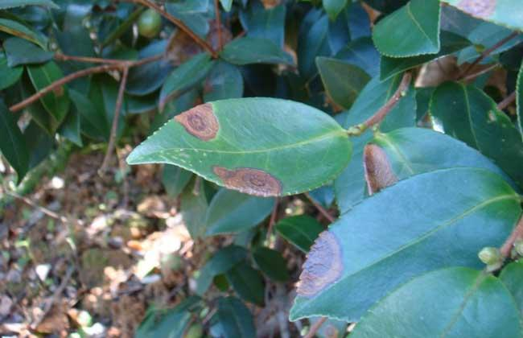
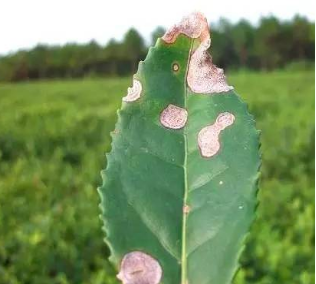

茶轮斑病是由茶拟盘多毛孢引起的、发生在茶的病害。 该病主要为害茶的叶片和新梢，一般发生在成叶和老叶上，常从叶尖或叶缘开始， 初为不明显的黄褐色小点，逐渐扩大为圆形或不规则形大斑， 由褐色发展成灰白色，并有褐色相间的同心轮纹，病斑上生有许多黑色小点。
茶轮斑病是常见的成叶、老叶病害，在中国各大茶区都有分布。该病可造成被害叶片大量脱落，并引起枯梢，致使树势衰弱，产量下降。
茶轮斑病的防治方法主要有选用抗病或耐病品种、加强茶园管理；当发病率超过15%以上时，还需要进行喷药防控。
茶轮斑病主要为害茶的叶片和新梢。叶片染病嫩叶、成叶、老叶均见发病，先在叶尖或叶缘上生出黄绿色小病斑，后扩展为圆形至椭圆形或不规则形褐色大病斑， 成叶和老叶上的病斑具明显的同心轮纹，后期病斑中间变成灰白色，湿度大出现呈轮纹状排列的黑色小粒点，即病原菌的子实体。 嫩叶染病时从叶尖向叶缘渐变黑褐色， 病斑不整齐，焦枯状，病斑正面散生煤污状小点， 病斑上没有轮纹，病斑多时常相互融合致叶片大部分布满褐色枯斑。嫩梢染病尖端先发病，后变黑枯死， 继续向下扩展引致枝枯，发生严重时叶片大量脱落或扦插苗成片死亡。
病菌以菌丝体或分生孢子盘在病叶或病梢上越冬，翌春条件适宜时产生分生孢子，从茶树嫩叶或成叶伤口处入侵， 经7-14天潜育引起发病，产生新病斑，湿度大时形成子实体，释放出成熟了解子借雨水飞溅传播，进行多次再侵染。
茶轮斑病属高温高湿型病害，高温高温条件适于发病。气温25-28℃，相对湿度85-87%利于发病。夏、秋两季发生重。 生产上捋采、机械采茶、修剪、夏季扦插苗及茶树害虫多的茶园易发病。茶园排水不良， 栽植过密的扦插苗圃发病重。品种间抗病性差异明显。凤凰水仙、湘波绿、云南大叶种易发病
选用抗病或耐病品种：选用龙井长叶、藤茶、茵香茶、毛蟹等较抗病或耐病品种。
茶园管理：加强茶园管理，防止捋采或强采，千方百计减少伤口。 机采、修剪、发现害虫后及时喷洒杀菌剂和杀虫剂预防病菌入侵。雨后及时排水，防止湿气滞留，可减轻发病。
喷药防控：当发病率超过15%以上时，应喷药防控。可选用50%苯菌灵可湿性粉剂1000倍液（安全间隔期7天）， 或10%苯醚甲环唑水分散粒剂1500-2000倍液（安全间隔期7天），或70%甲基硫菌灵可湿性粉剂1000-1500倍液（安全间隔期10天）等杀菌剂。 非采摘期用0.6-0.7%石灰半量式波尔多液防治，秋季结束后喷雾45%石硫合剂100倍液，或99%矿物油乳油100倍液，抑制病害的蔓延和浸染。